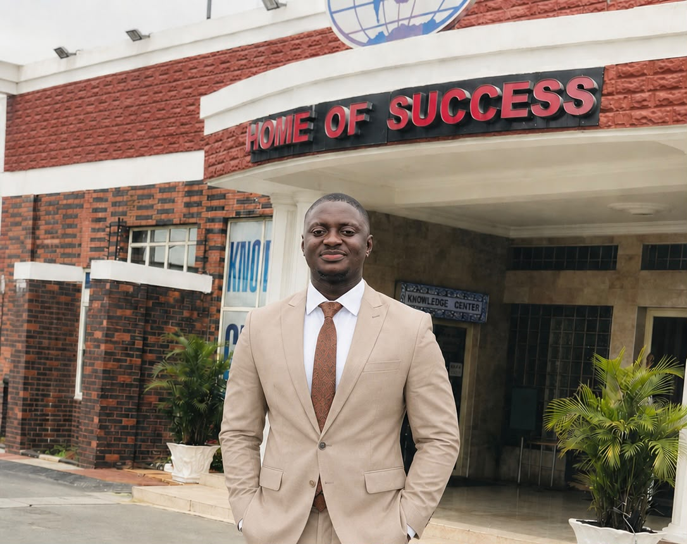

Uzi-Godwin Richard

PROFESSIONAL SUMMARY
I am a results-oriented operations and commercial professional with over five years of experience supporting technology, FMCG and industry operations through supplier management, procurement coordination, inventory oversight, budgeting, and multi-site operational management.
EDUCATION
BSc. Computer Engineering
Estam Formation University, Benin | 2018
West African Examination Council (WAEC)
Kings & Queens Model College, RIvers State | 2012
EXPERIENCE
Full-Stack Web Developer - In View
Angela Yu (Udemy) Bootcamp | 2026
Admin/Facility Manager - Alerzo Limited
2021 - 2025
- I managed procurement and supply activities across six states, ensuring the timely availability of products, materials, and operational resources.
- I built and maintained strong relationships with suppliers and service vendors by negotiating favorable pricing, service agreements, and delivery schedules.
- I monitored inventory levels and asset utilization to minimize operational disruptions and improve stock availability
- I prepared operational and commercial reports using Microsoft Excel to support management decisions and budget planning.
- I coordinated multiple vendors simultaneously, ensuring compliance with contractual obligations and company standards.
- I supported business expansion by coordinating operational activities for new locations and ensuring readiness before launch.
System Administrator (National Youth Service) - (BICT), Lafia
2019 - 2020
- I provided technical support and assisted in managing the organization's IT infrastructure, computer systems, and network operations.
- I maintained hardware and software functionality, troubleshot technical issues, supported users with IT-related challenges, and assisted with system maintenance and data security.
- I also contributed to the smooth operation of digital services and ensured the efficient functioning of information and communication technology resources within the organization.
SKILLS
- Microsoft Suites ⭐️⭐️⭐️
- HTML5 ⭐️⭐️⭐️⭐️⭐️
- CSS3 ⭐️⭐️⭐️
- Procurement Documentation ⭐️⭐️⭐️⭐️⭐️
- Vendor Performance Monitoring ⭐️⭐️⭐️⭐️⭐️
- Enterprise Resource Planning Systems ⭐️⭐️⭐️⭐️⭐️
PROFESSIONAL STRENGTHS
- I build and maintain productive supplier and stakeholder relationships.
- I analyze operational and commercial data to support informed business decisions.
- I negotiate effectively to achieve cost savings and mutually beneficial outcomes.
- I collaborate effectively with cross-functional teams to achieve business objectives.
- I am committed to continuous improvement and delivering measurable business results.
CERTIFICATIONS
- Google Digital Marketing
- Emotional Intelligence Certificate
- National Youth Service Corps certificate
- HSE 1, 2 & 3
- Fire Combatant Certificate
AWARDS
- President, Culture & Tourism Group - 2019
- Award of the president NYSC Marshall Band, Nasarawa - 2020
- Employee of the month of August - Alerzo Limited 2022
- Employee of the month of May - Alerzo Limited 2023
- Best track runner, KQMC 2012
REFERENCES
Available upon request.